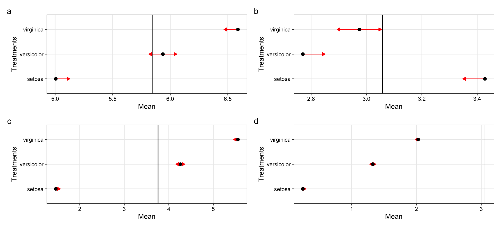
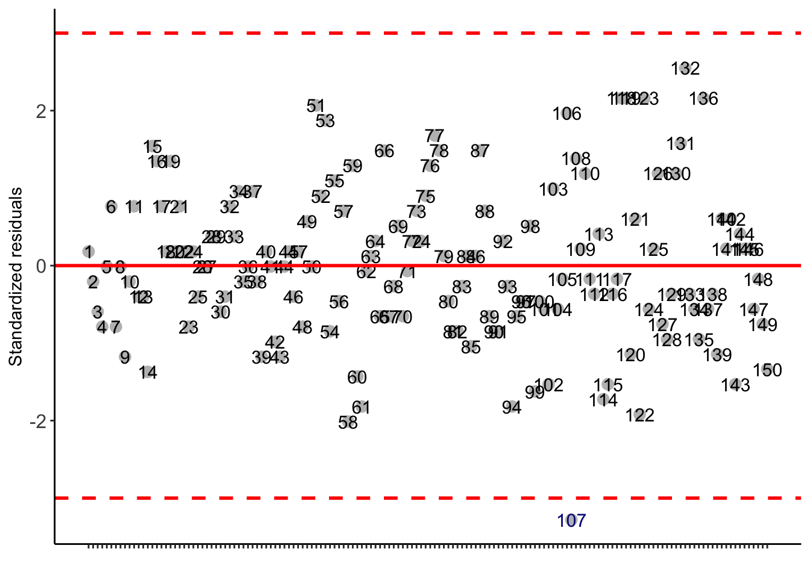
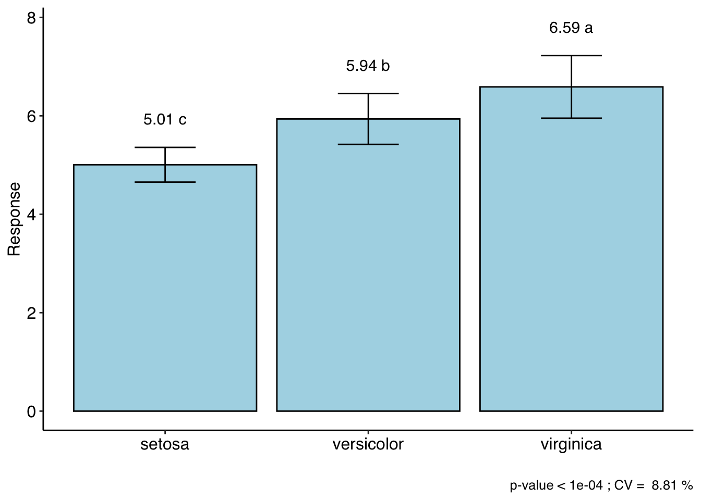
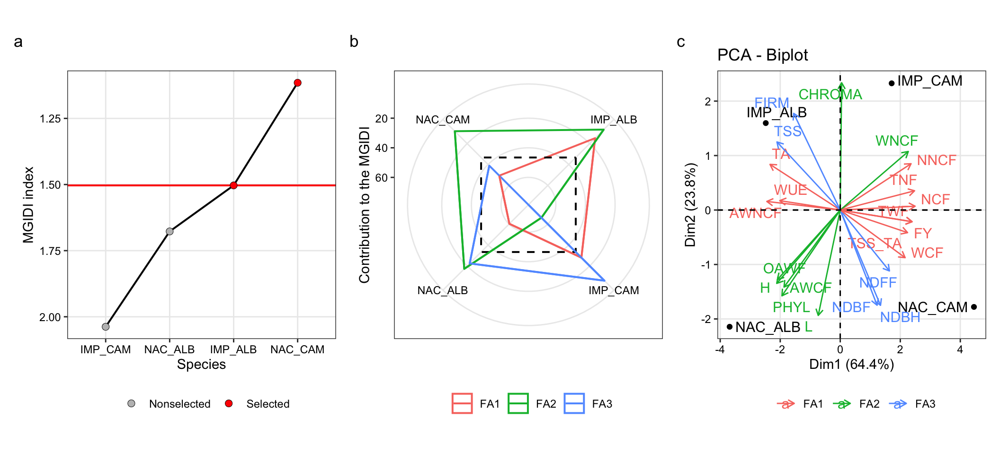

![]()
| variable | mean | se | kurt | skew | min | max |
|---|---|---|---|---|---|---|
| Petal.Length | 3.76 | 0.14 | -1.40 | -0.27 | 1.0 | 6.9 |
| Petal.Width | 1.20 | 0.06 | -1.34 | -0.10 | 0.1 | 2.5 |
| Sepal.Length | 5.84 | 0.07 | -0.55 | 0.31 | 4.3 | 7.9 |
| Sepal.Width | 3.06 | 0.04 | 0.23 | 0.32 | 2.0 | 4.4 |
Introducción
El análisis de datos es una etapa esencial en el proceso de investigación y consiste en examinar y analizar los datos recopilados de manera detallada para extraer información y obtener conclusiones relevantes en función a los objetivos de la investigación. Para realizar el análisis de datos, se pueden utilizar diferentes herramientas y técnicas, generalmente se construyen tablas y figuras. Estos resultados son usados para tomar decisiones y formular conclusiones sobre los datos, y también pueden ser utilizados para mejorar y optimizar procesos y sistemas. El análisis de datos es importante ya que permite a los investigadores obtener una visión más profunda y detallada de los datos y tomar decisiones más informadas y precisas.
La etapa de análisis de datos puede resultar un reto difícil para un recien egresado o tesista. Esto debido a la falta de experiencia o conocimiento en el uso de herramientas y técnicas de análisis de datos. Debido a ello, queremos facilitar algunas herramientas de análisis, al mismo tiempo, se pretende que los interesados puedan entrenarse en el uso de R. Ya que esta herramienta estadística ofrece un sin fin de paquetes que nos ayudan a realizar los análisis de manera sencilla pero de mucha categoría científica.
Análisis de datos
Librerias
Base de datos
Para esta oportunidad daremos uso de la base de datos de iris. Estos datos estarán disponibles al momento de instalar R.
Análisis descriptivo
Generalmente se puede presentar en una tabla los resultados descriptivos.
La otra opción podría ser una figura boxplot

Análisis de varianza
Generalmente en la mayoría de las tesis se presenta cada ANOVA para cada variable, la cual no es muy redundante en todo el documento. Además, en las revistas científicas de impacto, este tipo de tablas no es permitido si se tiene varias variables.
Analysis of Variance Table
Response: Sepal.Width
Df Sum Sq Mean Sq F value Pr(>F)
Species 2 11.345 5.6725 49.16 < 2.2e-16 ***
Residuals 147 16.962 0.1154
---
Signif. codes: 0 '***' 0.001 '**' 0.01 '*' 0.05 '.' 0.1 ' ' 1Sin embargo, se podría resumir de esta manera. En la tabla solamente se presenta aquellas variables con significancia estadística.
| FV | DF | Sepal.Length | Sepal.Width | Petal.Length | Petal.Width |
|---|---|---|---|---|---|
| Species | 2 | 31.61 ** | 5.67 ** | 218.55 ** | 40.21 ** |
| Residuals | 147 | 0.27 | 0.12 | 0.19 | 0.04 |
Una vez identificada las diferencias estadisticas se procede a realizar pruebas de promedio para seleccionar genotipos sobresalientes.
Hay otra manera de representar comparaciones graficamente

Tambien existe otra opción con el paquete AgroR

-----------------------------------------------------------------
Normality of errors
-----------------------------------------------------------------
Method Statistic p.value
Shapiro-Wilk normality test(W) 0.9878974 0.2188639
-----------------------------------------------------------------
Homogeneity of Variances
-----------------------------------------------------------------
Method Statistic p.value
Bartlett test(Bartlett's K-squared) 16.0057 0.0003345076
-----------------------------------------------------------------
Independence from errors
-----------------------------------------------------------------
Method Statistic p.value
Durbin-Watson test(DW) 2.043002 0.5401261
-----------------------------------------------------------------
Additional Information
-----------------------------------------------------------------
CV (%) = 8.81
MStrat/MST = 0.99
Mean = 5.8433
Median = 5.8
Possible outliers = 107
-----------------------------------------------------------------
Analysis of Variance
-----------------------------------------------------------------
Df Sum Sq Mean.Sq F value Pr(F)
trat 2 63.21213 31.6060667 119.2645 1.669669e-31
Residuals 147 38.95620 0.2650082
-----------------------------------------------------------------
Multiple Comparison Test: Tukey HSD
-----------------------------------------------------------------
resp groups
virginica 6.588 a
versicolor 5.936 b
setosa 5.006 c
Análisis multivariado
-------------------------------------------------------------------------------
Principal Component Analysis
-------------------------------------------------------------------------------
# A tibble: 22 × 4
PC Eigenvalues `Variance (%)` `Cum. variance (%)`
<chr> <dbl> <dbl> <dbl>
1 PC1 14.2 64.4 64.4
2 PC2 5.24 23.8 88.2
3 PC3 2.58 11.8 100
4 PC4 0 0 100
5 PC5 0 0 100
6 PC6 0 0 100
7 PC7 0 0 100
8 PC8 0 0 100
9 PC9 0 0 100
10 PC10 0 0 100
# … with 12 more rows
-------------------------------------------------------------------------------
Factor Analysis - factorial loadings after rotation-
-------------------------------------------------------------------------------
# A tibble: 22 × 6
VAR FA1 FA2 FA3 Communality Uniquenesses
<chr> <dbl> <dbl> <dbl> <dbl> <dbl>
1 NNCF -0.72 -0.67 -0.17 1 0
2 WNCF -0.65 -0.75 -0.14 1 0
3 AWNCF 0.63 0.49 0.6 1 0
4 WUE 1 0.04 0.03 1 0
5 NDBF -0.11 0.07 -0.99 1 0
6 NDFF -0.16 -0.24 -0.96 1 0
7 NDBH -0.17 0.07 -0.98 1 0
8 PHYL 0.6 0.79 -0.12 1 0
9 TA 0.84 0.1 0.54 1 0
10 NCF -0.84 -0.42 -0.35 1 0
# … with 12 more rows
-------------------------------------------------------------------------------
Comunalit Mean: 1
-------------------------------------------------------------------------------
Selection differential
-------------------------------------------------------------------------------
# A tibble: 22 × 8
VAR Factor Xo Xs SD SDperc sense goal
<chr> <chr> <dbl> <dbl> <dbl> <dbl> <chr> <dbl>
1 NNCF FA1 7.20 7.86 0.650 9.02 increase 100
2 AWNCF FA1 8.74 8.70 -0.0425 -0.486 increase 0
3 WUE FA1 116. 101. -15.0 -12.9 increase 0
4 TA FA1 1.42 1.35 -0.0700 -4.93 increase 0
5 NCF FA1 23.5 25.0 1.52 6.48 increase 100
6 TNF FA1 30.7 32.8 2.16 7.04 increase 100
7 WCF FA1 359. 395. 36.9 10.3 increase 100
8 TWF FA1 413. 442. 29.1 7.05 increase 100
9 FY FA1 30957. 33137. 2180. 7.04 increase 100
10 TSS_TA FA1 5.39 5.66 0.268 4.96 increase 100
# … with 12 more rows
------------------------------------------------------------------------------
Selected genotypes
-------------------------------------------------------------------------------
NAC_CAM IMP_ALB
-------------------------------------------------------------------------------Joining, by = "VAR"
Citation
BibTeX citation:
@online{santos2023,
author = {Santos, Franklin},
title = {Análisis de Datos Experimentales Agrícolas},
date = {2023-01-01},
url = {https://franklinsantosm.com/posts/agridata},
langid = {en}
}
For attribution, please cite this work as:
Santos, Franklin. 2023. “Análisis de Datos Experimentales
Agrícolas.” January 1, 2023. https://franklinsantosm.com/posts/agridata.